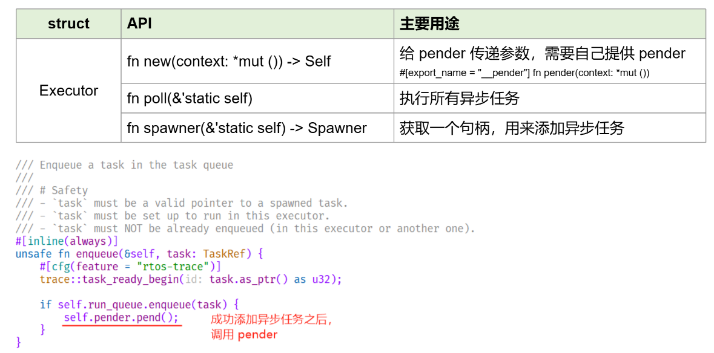
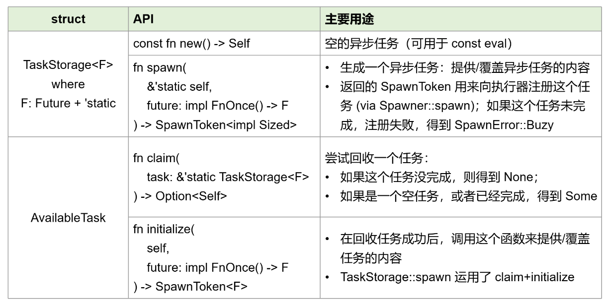
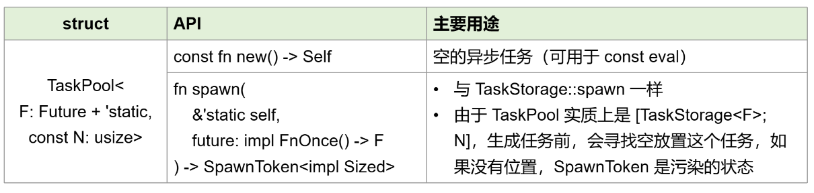
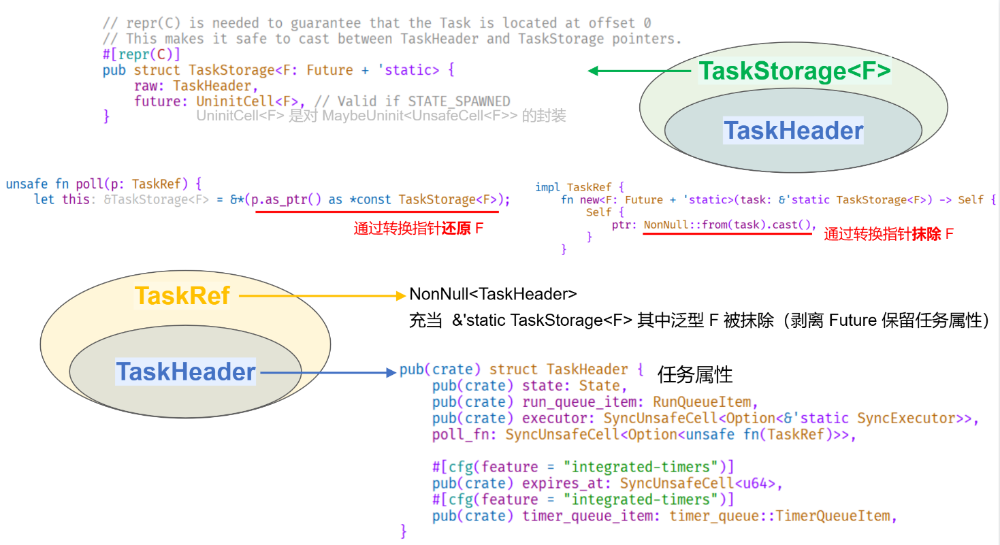

embassy 使用记录之 TaskStorage
时间：2024-06-03
定时打印 (std/本机系统)
FYI: 这里使用 std 的原因在于更快地了解和测试 embassy。
[package]
name = "embassy-local"
version = "0.1.0"
edition = "2021"
[dependencies]
# log feature 不是必要的，但它可以明确表示不使用 defmt（因为它俩互斥）
# p.s. [defmt](https://defmt.ferrous-systems.com/) 是一个针对资源有限设备（微控制器）的日志库
embassy-time = { version = "0.3", features = ["std", "log"] }
# arch-std：使用标准库，因为跑在本机系统上
# nightly：运用 TAIT (type_alias_impl_trait) 来为每个任务分配到静态区，这需要 nightly Rust。
# 该功能不是必要的，没有它，则采用基于 bump allocator 的 arena（内存分配池）。
# executor-thread：在 executor 中启用 thread-mode，比如在某些架构中通过 WFI 来避免忙循环轮询
# integrated-timers：在 executor 中，集成基于 embassy-time 的计时器队列
embassy-executor = {
version = "0.5",
features = ["arch-std", "nightly", "executor-thread", "integrated-timers"]
}
# 日志不是必要的
env_logger = "0.11" # 日志初始化、格式化（比如颜色、时间、模块名）
log = "0.4" # 日志生态的核心库
// 如果你启用 embassy-executor 的 nightly feature，那么无需这一行 TAIT。 // 为了代码简洁，之后的代码我不再引入 #![feature(type_alias_impl_trait)] #![feature(type_alias_impl_trait)] // 任务 1：每隔 1 秒打印 #[embassy_executor::task] async fn run1() { loop { log::info!("tick for 1 sec"); embassy_time::Timer::after_secs(1).await; } } // 任务 2：每隔 2 秒打印 #[embassy_executor::task] async fn run2() { loop { log::warn!("tick for 2 sec"); embassy_time::Timer::after_secs(2).await; } } #[embassy_executor::main] async fn main(spawner: embassy_executor::Spawner) { env_logger::builder().filter_level(log::LevelFilter::Debug).init(); spawner.spawn(run1()).unwrap(); spawner.spawn(run2()).unwrap(); }
[2024-06-03T14:24:31Z WARN embassy_local] tick for 2 sec
[2024-06-03T14:24:31Z INFO embassy_local] tick for 1 sec
[2024-06-03T14:24:32Z INFO embassy_local] tick for 1 sec
[2024-06-03T14:24:33Z WARN embassy_local] tick for 2 sec
[2024-06-03T14:24:33Z INFO embassy_local] tick for 1 sec
[2024-06-03T14:24:34Z INFO embassy_local] tick for 1 sec
[2024-06-03T14:24:35Z WARN embassy_local] tick for 2 sec
[2024-06-03T14:24:35Z INFO embassy_local] tick for 1 sec
[2024-06-03T14:24:36Z INFO embassy_local] tick for 1 sec
https://github.com/ch32-rs/ch32-hal/blob/main/src/embassy/time_driver_systick.rs#L48-L48C20
https://docs.rs/embassy-time/0.3.0/embassy_time/
https://docs.rs/embassy-time-driver/latest/embassy_time_driver/
https://docs.rs/embassy-executor/latest/embassy_executor/index.html
#[embassy_executor::task] 展开
对于上述 #[embassy_executor::task] async fn run1() { ... }，宏展开如下
#![allow(unused)] fn main() { #[doc(hidden)] async fn __run1_task() { loop { log::info!("tick for 1 sec"); embassy_time::Timer::after_secs(1).await; } } fn run1() -> ::embassy_executor::SpawnToken<impl Sized> { type Fut = impl ::core::future::Future + 'static; const POOL_SIZE: usize = 1; static POOL: ::embassy_executor::raw::TaskPool<Fut, POOL_SIZE> = ::embassy_executor::raw::TaskPool::new(); unsafe { POOL._spawn_async_fn(move || __run1_task()) } } }
注意：上面展开的代码可能随版本号而不同，所以仅供参考。
但依然可以看出当前 embassy-executor 对任务的一些设计：异步任务 run1 被改写成两个函数：
__run1_task保留了原异步函数的逻辑run1为一个同步函数，其中对异步任务进行注册和初始化，然后返回一个SpawnToken
在展开中的 run1 发生了一些有趣的事情：
SpawnToken是一个任务标记，作为Spawner::spawn函数的一个参数；当该任务已经在运行中，该标记是一个被污染的状态，再次 spawn 时返回SpawnError::Busy。该标记在 Drop 实现中会进行 panic，这意味着你必须把它按值传递给 spawn 函数进行处理，而不应该直接丢弃它。- 由于 async fn/block 生成的 Future 是不可命名类型，需要使用 TAIT 来描述这个具体类型
- 异步任务存放在一个 TaskPool 中（它实质上是一个大小为 POOL_SIZE、元素为相同 Future 的静态数组），这个数组的长度为 1，意味着
最多只能同时运行一个
run1—— 尤其是，当你连续两次 spawn 这个 run1，那么第二个 SpawnToken 会因为任务还在注册和运行的状态而受到污染， 从而 spawn 时得到 Busy Error。然而，这并不意味着任务只能运行一次：任务完成之后，它依然在任务栈里面，只是状态并不是 spawned，执行器轮询时 会跳过它，不过你依然可以索要（回收/重用）这个任务，具体代码见下文。
#![allow(unused)] fn main() { spawner.spawn(run1()).unwrap(); // 第二次运行任务 run1，会导致运行时错误 // called `Result::unwrap()` on an `Err` value: Busy spawner.spawn(run1()).unwrap(); }
#[embassy_executor::task] 限制
显然，当前 #[embassy_executor::task] 让任务执行具有如下限制：
- 无法同时多次运行任务
- 任务只能在编译时生成，无法在运行时生成
- 函数参数无法包含泛型
对于上述所有限制，可以使用 TaskStorage 来创建任务，细粒度控制任务存放的位置和行为。我在下一节具体介绍。
对于第 1 个问题，#[task] 宏支持 pool_size = n 参数来指定这个静态数组的大小，从而让这个任务最多可以运行 n 次：
#![allow(unused)] fn main() { #[embassy_executor::task(pool_size = 2)] async fn run1() { loop { log::info!("tick for 1 sec"); embassy_time::Timer::after_secs(1).await; } } spawner.spawn(run1()).unwrap(); spawner.spawn(run1()).unwrap(); // ok :) }
pool_size 背后是 TaskPool，如果你需要类型级别的控制，那么可以使用它。
TaskStorage
TaskStorage 必须在程序（操作系统）运行期间永远存活，即使该任务已经结束。此外，在这个任务结束后，允许再次运行它。
这里存在一个不寻常的设计逻辑：如果说 Executor::run(&'static mut self, ...) 让执行器在整个程序运行过程中必须存活，是可以理解的，
但让任务的存活时间覆盖整个程序运行周期，似乎是一个比较极端的做法，毕竟任务的内存资源最好在结束后回收才符合常规。
个人猜测，这么设计的原因可能出于以下原因：
- embassy 主要用于嵌入式系统（甚至微控制器），这决定了硬件资源极其有限
- 并发的任务的数量不会特别多
- 内存大小尽量可控：
- 当任务的大小是静态已知时，将 Future 存储在二进制的 data 段（
#[embassy_executor::task]被设计于此） - 当动态生成的任务被放置于堆上，适当地永久泄露内存是可接受的
- 无论静态任务还是动态任务，任务内存都是可被重复利用的（见下一节）
- 当任务的大小是静态已知时，将 Future 存储在二进制的 data 段（
所以，最终 TaskStorage::spawn 需要 &'static self。在 Rust 中获取 &'static 的方式主要有以下几种：
- const/static item：数据存放于二进制的数据段内，所以指向它的引用在程序运行期间永远有效
- constant expressions：
&CONST、&STATIC - static promotion：
&const_eval - footgun on
static mut: 预计 2024 edition 禁止&STATIC_MUT和&mut STATIC_MUT（目前是警告），甚至有相当一部分社区共识决定以后弃用static mut(pre-RFC 3560)。主要是两点：意外的&'static mut（正确做法：注意引用的生命周期、使用addr_of{,_mut}直接创建指针而不是引用）和线程同步问题（正确做法：SyncUnsafeCell）。
- constant expressions：
- 通过解引用裸指针获得任意生命周期的引用：
&*raw_pointer、&mut *raw_pointer- 正确示例：
Box::leak数据存放于堆上，只要不主动回收内存，指向它的引用在此后的运行期间永远有效 - 其他一些
fn<'a>(...) -> &'a ...函数（注意返回值的生命周期不关联任何输入参数）：slice::from_raw_parts{,mut}
- 正确示例：
transmute：一个危险的后门，利用它将临时的生命周期延长到 'static
多次运行任务 / 动态生成任务
这将解除限制 1 和 2：
#[embassy_executor::main] async fn main(spawner: embassy_executor::Spawner) { env_logger::builder().filter_level(log::LevelFilter::Debug).init(); // 使用 run_n 重写 run1 + run2，打印结果是一样的 spawner .spawn(run_n(1, || log::info!("tick for 1 sec"))) .unwrap(); spawner .spawn(run_n(2, || log::warn!("tick for 2 sec"))) .unwrap(); } // [ok] 任务 n：每隔 n 秒打印 fn run_n(n: u64, f: fn()) -> embassy_executor::SpawnToken<impl Sized> { // 在堆上泄露任务的内存 let task = Box::leak(Box::new(embassy_executor::raw::TaskStorage::new())); task.spawn(move || async move { loop { f(); embassy_time::Timer::after_secs(n).await; } }) }
FYI: 对于上述 run_n 任务，如果你使用 #[embassy_executor::task]，将遇到问题 1 和 2
#[embassy_executor::main] async fn main(spawner: embassy_executor::Spawner) { env_logger::builder().filter_level(log::LevelFilter::Debug).init(); spawner .spawn(run_n(1, || log::info!("tick for 1 sec"))) .unwrap(); // 限制 1：run_n 为单个任务，在未指定 pool_size 时，最多同时运行一次 spawner .spawn(run_n(2, || log::warn!("tick for 2 sec"))) .unwrap(); // 运行时错误：called `Result::unwrap()` on an `Err` value: Busy } // 限制 2：宏是静态编译的，任务只能在编译时生成，无法在运行时生成 #[embassy_executor::task] async fn run_n(n: u64, f: fn()) { loop { f(); embassy_time::Timer::after_secs(n).await; } }
泛型参数
这解决了限制 3
#[embassy_executor::main] async fn main(spawner: embassy_executor::Spawner) { env_logger::builder().filter_level(log::LevelFilter::Debug).init(); // 使用 run_n 重写 run1 + run2，打印结果是一样的 spawner .spawn(run_n(1, || log::info!("tick for 1 sec"))) .unwrap(); spawner .spawn(run_n(2, || log::warn!("tick for 2 sec"))) .unwrap(); } // [ok] 任务 n：每隔 n 秒打印，注意 f 的类型不再是 fn，而是一个泛型 fn run_n<F: 'static + Fn()>(n: u64, f: F) -> embassy_executor::SpawnToken<impl Sized> { // 在堆上泄露任务的内存 let task = Box::leak(Box::new(embassy_executor::raw::TaskStorage::new())); task.spawn(move || async move { loop { f(); embassy_time::Timer::after_secs(n).await; } }) }
FYI: #[embassy_executor::task] 让泛型参数无法编译：
#[embassy_executor::main] async fn main(spawner: embassy_executor::Spawner) { env_logger::builder().filter_level(log::LevelFilter::Debug).init(); spawner .spawn(run_n(1, || log::info!("tick for 1 sec"))) .unwrap(); } // 限制 3：参数无法为泛型 #[embassy_executor::task] async fn run_n<F: 'static + Fn()>(n: u64, f: F) { loop { f(); embassy_time::Timer::after_secs(n).await; } } // 编译器错误 error: task functions must not be generic --> src/main.rs:16:1 | 16 | async fn run_n<F: 'static + Fn()>(n: u64, f: F) { | ^^^^^^^^^^^^^^^^^^^^^^^^^^^^^^^^^^^^^^^^^^^^^^^
重用任务/重用任务内存
#[embassy_executor::task] 和 TaskStorage 都支持在任务结束之后再次通过 spawn 运行。
为了演示任务结束，代码没有使用 loop，也等待了足够长的时间。
// 使用 #[embassy_executor::task] 达到内存复用 // * 重新运行相同的任务 // * 或者在已完成的任务之后，通过函数指针参数指定新的任务内容 #[macro_use] extern crate log; use embassy_time::Timer; #[embassy_executor::main] async fn main(spawner: embassy_executor::Spawner) { env_logger::builder().filter_level(log::LevelFilter::Debug).init(); spawner.spawn(run1()).unwrap(); spawner.spawn(run_n(1, || info!("print in 1 sec"))).unwrap(); Timer::after_secs(2).await; // 等待足够的时间让两个任务运行完 spawner.spawn(run1()).unwrap(); // 任务的内容不变 spawner.spawn(run_n(0, || warn!("print in 0 sec"))).unwrap(); // 新的任务内容 } // 如前所述，run_n 最多同时运行运行一次 #[embassy_executor::task] async fn run_n(n: u64, f: fn()) { Timer::after_secs(n).await; f(); } // 如前所述，run1 最多同时运行运行一次 #[embassy_executor::task] async fn run1() { Timer::after_secs(1).await; debug!("run 1"); }
[2024-06-07T08:28:00Z INFO embassy_local] print in 1 sec
[2024-06-07T08:28:00Z DEBUG embassy_local] run 1
[2024-06-07T08:28:01Z WARN embassy_local] print in 0 sec
[2024-06-07T08:28:02Z DEBUG embassy_local] run 1
而 TaskStorage 需要搭配 AvailableTask 才能重写任务：
// 对于 TaskStorage，使用 AvailableTask 对已完成的任务内存进行复用， // 还有一个亮点在于通过泛型参数（而不是函数指针）来指定新任务。 // 技巧：任务为 &'static TaskStorage<BoxFut> 类型，它是 Copy 的 #[macro_use] extern crate log; use core::{future::Future, pin::Pin}; use embassy_executor::{ raw::{AvailableTask, TaskStorage}, SpawnToken, }; use embassy_time::Timer; #[embassy_executor::main] async fn main(spawner: embassy_executor::Spawner) { env_logger::builder().filter_level(log::LevelFilter::Debug).init(); // 同时运行两个不同的任务 let (task1, token1) = run_n(1, || info!("print in 100 ms")); spawner.spawn(token1).unwrap(); let (task2, token2) = run_n(2, || warn!("print in 200 ms")); spawner.spawn(token2).unwrap(); Timer::after_secs(1).await; // 等待足够的时间，让那两个任务结束 // 在 task1 内存中，建立新的任务并运行 let token = AvailableTask::claim(task1).unwrap().initialize(|| Box::pin(async { info!("reclaim task1") })); spawner.spawn(token).unwrap(); // 在 task2 内存中，建立新的任务并运行 let token = AvailableTask::claim(task2).unwrap().initialize(|| Box::pin(async { info!("reclaim task2") })); spawner.spawn(token).unwrap(); // 新的两个任务正在同时运行 Timer::after_secs(1).await; // 等待足够的时间，让那两个新的任务结束 // 再次重复利用任务内存，同时运行新的任务 spawner.spawn(reclaim(task1, || async { warn!("reclaim task1 again :)") })).unwrap(); spawner.spawn(reclaim(task2, || async { warn!("reclaim task2 again :)") })).unwrap(); } type BoxFut = Pin<Box<dyn 'static + Future<Output = ()>>>; type Task = &'static TaskStorage<BoxFut>; // 任务 n：每隔 n * 100 毫秒打印 fn run_n<F: 'static + Fn()>(n: u64, f: F) -> (Task, SpawnToken<impl Sized>) { // 在堆上泄露任务的内存 let task: &'static _ = Box::leak(Box::new(TaskStorage::new())); let token = task.spawn(move || { Box::pin(async move { Timer::after_millis(n * 100).await; f(); }) as BoxFut }); (task, token) } // 重新使用已经完成的任务内存，来生成新的任务 fn reclaim<F, Fut>(task: Task, f: F) -> SpawnToken<impl Sized> where F: FnOnce() -> Fut, Fut: 'static + Future<Output = ()>, { AvailableTask::claim(task).unwrap().initialize(|| Box::pin(f())) }
[2024-06-07T07:40:42Z INFO embassy_local] print in 100 ms
[2024-06-07T07:40:42Z WARN embassy_local] print in 200 ms
[2024-06-07T07:40:42Z INFO embassy_local] reclaim task2
[2024-06-07T07:40:42Z INFO embassy_local] reclaim task1
[2024-06-07T07:40:43Z WARN embassy_local] reclaim task2 again :)
[2024-06-07T07:40:43Z WARN embassy_local] reclaim task1 again :)
embassy_executor::raw 模块
一些我在第三周 PPT 里记录的总结，我不想重新在这写一遍，所以直接提供图片



TaskStorage 及其变体
在 embassy_executor 中，任务会被表示为多种类型，但其实它们是一个东西，有时可以相互转化。
